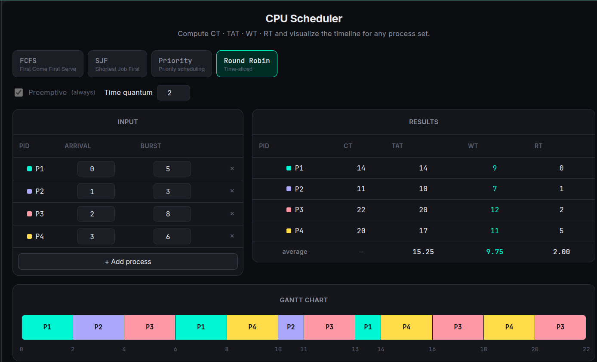
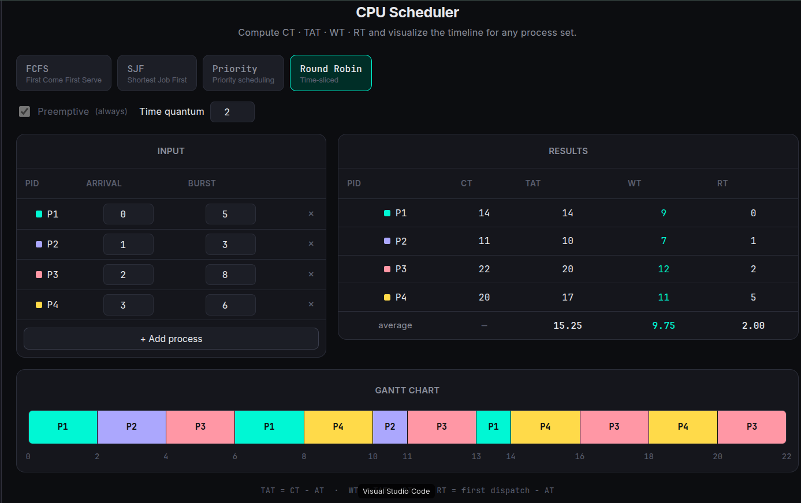
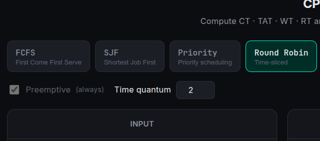
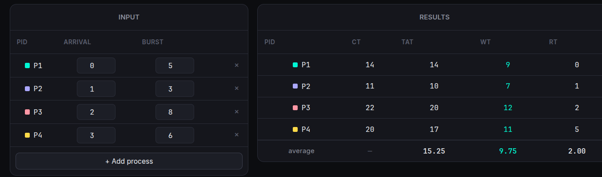

A web tool for simulating CPU scheduling algorithms — input any process scenario and instantly get WT, BT, and TAT results.

CPU Scheduler is a browser-based visualization tool for operating-system scheduling algorithms. You define a set of processes — each with arrival time and burst time — and the app simulates how different schedulers would handle them, rendering a Gantt chart and a table of metrics.
The goal was to build something useful for OS coursework: a fast, shareable link you can hand to a classmate with a pre-loaded scenario. Vite's HMR made iteration very quick, and keeping it purely client-side meant zero backend costs.
Implemented FCFS, SJF (preemptive & non-preemptive), Round Robin, and Priority scheduling from scratch in JavaScript. Each algorithm outputs per-process wait time, turnaround time, and CPU utilization. The shareable URL encodes the scenario so others can open the exact same state.


